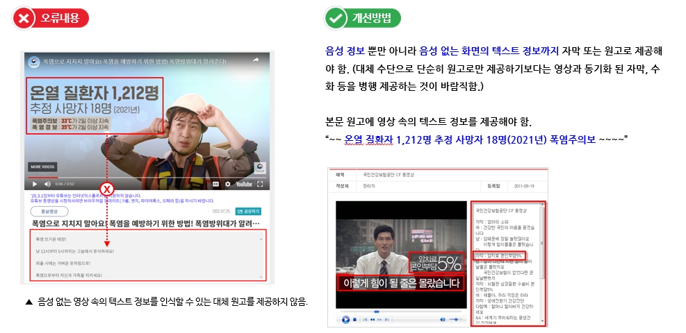

1.2 멀티미디어 대체 수단
멀티미디어 콘텐츠에는 자막, 원고 또는 수화를 제공해야 합니다.
동영상, 오디오 등 멀티미디어 콘텐츠에 대체 수단을 제공하여 청각·시각 장애인도 동등하게 정보를 접근할 수 있도록 합니다.
1.2.1. 자막 제공
멀티미디어 콘텐츠에는 자막, 대본 또는 수어를 제공해야 한다.
• 멀티미디어 콘텐츠에 대체수단(자막, 원고, 수화 중 하나 이상)을 전혀 제공하지 않은 경우
• 멀티미디어 콘텐츠에 대한 대체 수단의 내용을 불충분 또는 적절하지 않게 제공한 경우
